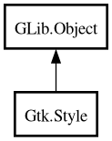

Style
Object Hierarchy:

Description:
[
CCode ( type_id =
"gtk_style_get_type ()" ) ]
[
Version ( deprecated =
true , deprecated_since =
"3.0" , replacement =
"StyleContext" ) ]
public class Style :
Object
Warning: Style is deprecated since 3.0. Use StyleContext.
Content:
Properties:
Creation methods:
Methods:
- public void @get (Type widget_type, ...)
- public void apply_default_background (Context cr, Window window, StateType state_type, int x, int y, int width, int height)
- public virtual Style clone ()
- public Style copy ()
- public virtual void copy_to (Style dest)
- public void detach ()
- public virtual void draw_arrow (Context cr, StateType state_type, ShadowType shadow_type, Widget widget, string detail, ArrowType arrow_type, bool fill, int x, int y, int width, int height)
- public virtual void draw_box (Context cr, StateType state_type, ShadowType shadow_type, Widget widget, string detail, int x, int y, int width, int height)
- public virtual void draw_box_gap (Context cr, StateType state_type, ShadowType shadow_type, Widget widget, string detail, int x, int y, int width, int height, PositionType gap_side, int gap_x, int gap_width)
- public virtual void draw_check (Context cr, StateType state_type, ShadowType shadow_type, Widget widget, string detail, int x, int y, int width, int height)
- public virtual void draw_diamond (Context cr, StateType state_type, ShadowType shadow_type, Widget widget, string detail, int x, int y, int width, int height)
- public virtual void draw_expander (Context cr, StateType state_type, Widget widget, string detail, int x, int y, ExpanderStyle expander_style)
- public virtual void draw_extension (Context cr, StateType state_type, ShadowType shadow_type, Widget widget, string detail, int x, int y, int width, int height, PositionType gap_side)
- public virtual void draw_flat_box (Context cr, StateType state_type, ShadowType shadow_type, Widget widget, string detail, int x, int y, int width, int height)
- public virtual void draw_focus (Context cr, StateType state_type, Widget widget, string detail, int x, int y, int width, int height)
- public virtual void draw_handle (Context cr, StateType state_type, ShadowType shadow_type, Widget widget, string detail, int x, int y, int width, int height, Orientation orientation)
- public virtual void draw_hline (Context cr, StateType state_type, Widget widget, string detail, int x1, int x2, int y)
- public virtual void draw_layout (Context cr, StateType state_type, bool use_text, Widget widget, string detail, int x, int y, Layout layout)
- public virtual void draw_option (Context cr, StateType state_type, ShadowType shadow_type, Widget widget, string detail, int x, int y, int width, int height)
- public virtual void draw_resize_grip (Context cr, StateType state_type, Widget widget, string detail, WindowEdge edge, int x, int y, int width, int height)
- public virtual void draw_shadow (Context cr, StateType state_type, ShadowType shadow_type, Widget widget, string detail, int x, int y, int width, int height)
- public virtual void draw_shadow_gap (Context cr, StateType state_type, ShadowType shadow_type, Widget widget, string detail, int x, int y, int width, int height, PositionType gap_side, int gap_x, int gap_width)
- public virtual void draw_slider (Context cr, StateType state_type, ShadowType shadow_type, Widget widget, string detail, int x, int y, int width, int height, Orientation orientation)
- public virtual void draw_spinner (Context cr, StateType state_type, Widget widget, string detail, uint step, int x, int y, int width, int height)
- public virtual void draw_tab (Context cr, StateType state_type, ShadowType shadow_type, Widget widget, string detail, int x, int y, int width, int height)
- public virtual void draw_vline (Context cr, StateType state_type, Widget widget, string detail, int y1_, int y2_, int x)
- public void get_style_property (Type widget_type, string property_name, ref Value value)
- public void get_valist (Type widget_type, string first_property_name, va_list var_args)
- public bool has_context ()
- public virtual void init_from_rc (RcStyle rc_style)
- public bool lookup_color (string color_name, out Color color)
- public unowned IconSet lookup_icon_set (string stock_id)
- public virtual Pixbuf render_icon (IconSource source, TextDirection direction, StateType state, int size, Widget? widget, string? detail)
- public virtual void set_background (Window window, StateType state_type)
Signals:
Fields:
Inherited Members:
All known members inherited from class GLib.Object